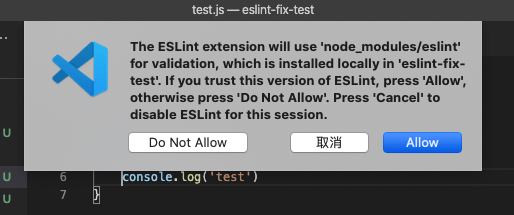
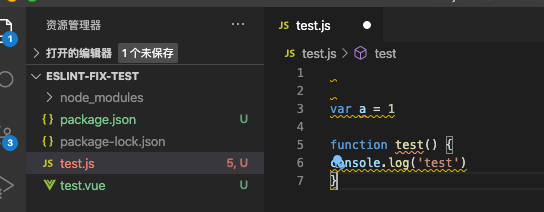
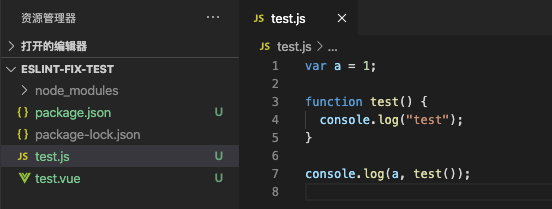

怎么在老项目中加入eslint规则，并可以保存后自动fix
这篇文章发布于 2020/10/25，归类于 Vue
标签：
老项目加eslint，旧项目引入eslint，vue eslint
在 "Vue CLI 构建项目时选择不同的 eslint 规则会有什么区别？" 中，我们有了解到，不同的 eslint 配置项，会对应不同的 npm 包，eslintConfig 中对应的 extends 也不一样。我们只要找出某个配置特有的 npm 包，以及配置，就可以在旧项目中，引入对应的 eslint 配置，结合 vscode eslint 插件就可以做到保存后自动 fix
- 新建一个目录 eslint-fix-test，cd 到该目录，使用 npm init -y 创建一个新的 package.json
- 我们把 ESLint + Prettier 的 package.json 配置拷贝到这个 package.json 中
// ESLint + Prettier package.json配置
"devDependencies": {
"@vue/cli-plugin-eslint": "~4.5.0",
"@vue/eslint-config-prettier": "^6.0.0",
"babel-eslint": "^10.1.0",
"eslint": "^6.7.2",
"eslint-plugin-prettier": "^3.1.3",
"eslint-plugin-vue": "^6.2.2",
"prettier": "^1.19.1"
},
"eslintConfig": {
"root": true,
"env": {
"node": true
},
"extends": [
"plugin:vue/essential",
"eslint:recommended",
"@vue/prettier"
],
"parserOptions": {
"parser": "babel-eslint"
},
"rules": {}
}- npm install 安装依赖
- 在该目录下写一个 test.vue 文件，或 test.js 文件，特意写的很随意，看eslint是否报错
一般情况下，npm install 后，如果vscode eslint插件配置正确，会弹出如下弹窗，提示是否允许 eslint 修复

注意：
- 如果没有安装配置好vscode的eslint插件，请先安装，可以参考我之前的笔记: 2020 vscode配置eslint保存后自动fix
- 如果没有生效，可以尝试新开一个vscode窗口，直接打开eslint-fix-test目录，有时候目录层级深了，会不起作用
- 如果还是没生效，可以尝试彻底关闭 vscode，再重新打开
- 有时候刚打开项目，eslint插件可能需要时间加载，等个几秒钟才会工作
下面是我测试时，eslint插件工作正常的示例

保存后会自动fix，由于两个变量没使用还是会报警告，我用console.log打印了下，就没 warning了

综上，只要你知道某个 eslint 配置所需的npm包及 eslintConfig.extends 配置，那么就可以在项目中任意使用eslint了，完整测试 demo 可以从 github 下载 eslint-fix-test | github